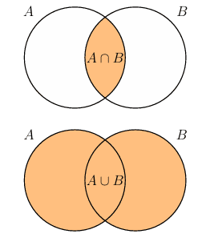

Обозначения
Вопросы по математическим обозначениям.
Перед вопросами
Видео, которые помогут разобраться в математике для ML
Посмотрите их целиком или возвращайтесь к нужным темам, когда встречаете незнакомое понятие в вопросах ниже.
-
 Математика для ML: теория вероятностей, математическая
статистика и оптимизация ↗
Разбор трёх разделов, без которых не обойтись ML-инженеру:
теорвер, матстат и оптимизация — что именно спрашивают и зачем
это нужно на практике.
Математика для ML: теория вероятностей, математическая
статистика и оптимизация ↗
Разбор трёх разделов, без которых не обойтись ML-инженеру:
теорвер, матстат и оптимизация — что именно спрашивают и зачем
это нужно на практике.
-
 Популярные вопросы по математике для ML и DS ↗
Линейная алгебра, матанализ, векторы и матрицы, нормы,
косинусная близость, ранг, базис, производная, градиент и
экстремумы, аппроксимация, интерполяция и экстраполяция.
Популярные вопросы по математике для ML и DS ↗
Линейная алгебра, матанализ, векторы и матрицы, нормы,
косинусная близость, ранг, базис, производная, градиент и
экстремумы, аппроксимация, интерполяция и экстраполяция.
-
Запись суммирования и произведения
Запись суммирования и произведения: если мы складываем/умножаем и т.д. $n$ объектов, то запись можно сократить:
$$\begin{aligned} a_1+a_2+\dots+a_n=\sum_{i=1}^n a_i\\ a_1\cdot a_2\cdot \;\dots\; \cdot a_n=\prod_{i=1}^n a_i \end{aligned}$$
Символ $\sum$ (сигма) и $\prod$ (пи) — это просто краткая запись длинных сумм и произведений. Нижний индекс ($i=1$) говорит, с какого числа начать, верхний ($n$) — до какого дойти. На каждом шаге $i$ увеличивается на единицу.
$$\sum_{i=1}^4 i^2 = 1^2 + 2^2 + 3^2 + 4^2 = 1 + 4 + 9 + 16 = 30$$
$$\prod_{i=1}^4 i = 1 \cdot 2 \cdot 3 \cdot 4 = 24$$
В ML эти символы встречаются повсюду. Например, функция потерь MSE — это сумма по всем объектам выборки:
$$L = \frac{1}{n}\sum_{i=1}^n (y_i - \hat{y}_i)^2$$
А функция правдоподобия — это произведение:
$$L(\theta) = \prod_{i=1}^n f(x_i | \theta)$$
Без понимания этих символов читать формулы ML практически невозможно.
Что означает запись $\sum_{i=1}^n a_i$?
Сумма $a_1 + a_2 + \cdots + a_n$: начинаем с $i=1$, прибавляем каждый $a_i$ и увеличиваем $i$ на 1 до $n$.
Что означает запись $\prod_{i=1}^n a_i$?
Произведение $a_1 \cdot a_2 \cdot \ldots \cdot a_n$: символ $\prod$ (пи) означает то же самое, что $\sum$, но для перемножения.
-
Символ принадлежности
$\in$ — символ принадлежности элемента к множеству.
- $x\in \mathbb{R}$ означает число $x$ принадлежит множеству вещественных чисел.
- $x\in \mathbb{R}^n$ означает, что $x$ — $n$-мерный вектор: вектор $x$ принадлежит $n$-мерному пространству вещественных чисел.
- $x\not\in \mathbb{R}$ — $x$ не принадлежит множеству вещественных чисел.
$\subset$ — тоже символ принадлежности, но множеств.
Выражение "множество $A$ принадлежит множеству $B$" будет записано как $A\subset B$, то есть $B$ полностью содержит в себе элементы множества $A$.
Не путайте $\in$ и $\subset$: первый применяется к элементу и множеству, второй — к двум множествам.
- $3 \in \mathbb{N}$ — число $3$ принадлежит натуральным числам.
- $\mathbb{N} \subset \mathbb{Z}$ — натуральные числа — подмножество целых (все натуральные являются целыми, но не наоборот).
В ML запись $\theta \in \mathbb{R}^n$ встречается повсюду: параметры модели — это вектор из $n$ вещественных чисел. Или $y \in \{0, 1\}$ — метка принадлежит множеству из двух значений. Или $f: \mathbb{R}^d \to \mathbb{R}$ — функция, которая отображает вектор признаков в вещественное число (предсказание).
Что означает символ $\in$ и чем он отличается от $\subset$?
$\in$ — символ принадлежности элемента множеству ($x \in A$: элемент $x$ входит в $A$). $\subset$ — символ вложенности множеств ($A \subset B$: все элементы $A$ являются элементами $B$).
Что означает запись $x \in \mathbb{R}^n$?
Что $x$ — $n$-мерный вектор вещественных чисел, то есть упорядоченный набор из $n$ вещественных чисел.
Приведите пример использования $\in$ и $\subset$ на примере числовых множеств.
$3 \in \mathbb{N}$ — число $3$ принадлежит натуральным числам. $\mathbb{N} \subset \mathbb{Z}$ — натуральные числа являются подмножеством целых.
Как символ принадлежности используется в ML-нотации?
Например, $\theta \in \mathbb{R}^n$ — параметры модели, $y \in \{0, 1\}$ — метка бинарной классификации, $f: \mathbb{R}^d \to \mathbb{R}$ — модель, отображающая вектор признаков в предсказание.
-
Обозначение векторов
Иногда векторы обозначаются жирным шрифтом, чтобы было удобнее отличать их от чисел (скаляров): $\mathbf{x}\in\mathbb{R}^n, x\in \mathbb{R}$.
Скаляр — это одно число. Вектор — это упорядоченный набор чисел. Разные книги и статьи используют разные соглашения: жирный строчный $\mathbf{x}$, надчёркивание $\vec{x}$ или просто $x$ без украшений (тогда приходится понимать из контекста). В ML-литературе чаще всего встречается жирное начертание.
- $x \in \mathbb{R}$ — скаляр: например, рост конкретного человека ($x = 175$ см)
- $\mathbf{x} \in \mathbb{R}^n$ — вектор: например, признаки одного объекта в датасете — рост, вес, возраст сразу вместе:
$$\mathbf{x} = \begin{bmatrix} 175 \\ 70 \\ 25 \end{bmatrix} \in \mathbb{R}^3$$
В чём разница между скаляром и вектором?
Скаляр — одно число ($x \in \mathbb{R}$). Вектор — упорядоченный набор чисел ($\mathbf{x} \in \mathbb{R}^n$).
Зачем в ML-литературе используют жирное начертание $\mathbf{x}$ для векторов?
Чтобы визуально отличать векторы от скаляров в формулах, особенно когда используются обе нотации в одном выражении.
Что означает $\mathbf{x} \in \mathbb{R}^3$?
Вектор $\mathbf{x}$ из трёх вещественных чисел, например $\mathbf{x} = (175, 70, 25)^\top$ — описание объекта тремя признаками (рост, вес, возраст).
Какие другие обозначения для векторов встречаются помимо жирного шрифта?
Надчёркивание $\vec{x}$ или просто $x$ без украшений (тогда принадлежность к вектору понимается из контекста). В ML-литературе наиболее распространено жирное начертание $\mathbf{x}$.
-
Сильно меньше/больше
Символы $\ll$ и $\gg$ используются для обозначения сильно меньшего и сильно большего соотношения между числами.
- $\ll$ — сильно меньше
- $\gg$ — сильно больше
Например, $1 \ll 10^8$ означает, что 1 сильно меньше $10^8$, а $10^8 \gg 1$ означает, что $10^8$ сильно больше 1.
Есть варианты для подчеркивания еще большего и меньшего соотношения между числами:
- $\lll$ — сильно сильно меньше
- $\ggg$ — сильно сильно больше
Например, $1 \lll 10^{50}$ означает, что 1 сильно сильно меньше $10^{50}$, а $10^{50} \ggg 1$ означает, что $10^{50}$ сильно сильно больше 1.
Что означают символы $\ll$ и $\gg$?
$\ll$ — "сильно меньше", $\gg$ — "сильно больше". Используются, когда одно число на много порядков превосходит другое.
Приведите пример использования $\ll$ в контексте числовых значений.
$\eta \ll 1$ — learning rate много меньше единицы, например $\eta = 10^{-3}$. Запись подчёркивает, что шаг обучения очень мал по сравнению с масштабом параметров.
Чем $\ll$ отличается от обычного знака $<$?
$<$ означает просто "меньше", $\ll$ — "несравнимо меньше", то есть разрыв между значениями очень велик (как правило, на несколько порядков).
Когда может встретиться символ $\gg$ в формулах машинного обучения?
Например, $n \gg p$ — число объектов намного больше числа признаков, что является стандартным предположением классических статистических методов.
-
Символ объединения и пересечения множеств
Объединение
$\cup$ — символ объединения множеств.
Если $A = \{1,2,3\}$ и $B = \{2,3,4\}$, то $A \cup B = \{1,2,3,4\}$ — множество всех элементов, которые принадлежат либо $A$, либо $B$, либо обоим.
Пересечение
$\cap$ — символ пересечения множеств.
Если $A = \{1,2,3\}$ и $B = \{2,3,4\}$, то $A \cap B = \{2,3\}$ — множество всех элементов, которые принадлежат и $A$, и $B$.
Диаграмма Венна
Диаграмма Венна — это графическое представление множеств и операций над ними.

Диаграмма Венна для двух множеств $A$ и $B$. $A \cup B$ — объединение, $A \cap B$ — пересечение Что означают символы $\cup$ и $\cap$?
$\cup$ — объединение: все элементы, которые входят хотя бы в одно из множеств. $\cap$ — пересечение: только те элементы, которые входят в оба множества одновременно.
Что такое диаграмма Венна и как на ней изображаются объединение и пересечение?
Диаграмма Венна — графическое представление множеств в виде перекрывающихся кругов. $A \cup B$ — оба круга целиком. $A \cap B$ — только область перекрытия.
Как символы $\cup$ и $\cap$ могут встречаться при работе с данными в ML?
$\text{train} \cup \text{val}$ — объединение обучающей и валидационной выборок. $\text{group\_A} \cap \text{group\_B}$ — пересечение групп A и B в A/B-тесте (нежелательное явление).
-
Кванторы
Квантор всеобщности
$\forall$ — символ для всех.
$\forall x \in \mathbb{R}, \; x^2 \geq 0$ — "для любого вещественного числа $x$ квадрат $x^2$ неотрицателен".
Квантор существования
$\exists$ — символ существует.
$\exists x \in \mathbb{R}: x^2 = 4$ — "существует вещественное число $x$, квадрат которого равен 4" (например, $x=2$ или $x=-2$).
Отрицание
$\nexists$ — символ не существует.
$\nexists x \in \mathbb{R}: x^2 = -1$ — "не существует вещественного числа $x$, квадрат которого равен $-1$".
Кванторы — стандартный язык математических утверждений. Несколько примеров из ML-формул:
- "$\forall i \in \{1, \dots, n\}$" — утверждение справедливо для каждого объекта выборки.
- "$\exists w^*: L(w^*) = \min_w L(w)$" — существует оптимальный вектор параметров.
На практике в коде кванторы заменяются циклами и операциями над массивами, но в математических утверждениях они выражают общность или существование без явного перебора.
Что означают символы $\forall$ и $\exists$?
$\forall$ — "для всех" (квантор всеобщности). $\exists$ — "существует" (квантор существования). $\nexists$ — "не существует".
Что означает запись $\forall x \in \mathbb{R}, x^2 \geq 0$?
Для любого вещественного числа $x$ выполняется $x^2 \geq 0$.
Что означает $\exists w^*: L(w^*) = \min_w L(w)$ в контексте обучения модели?
Существует оптимальный вектор параметров $w^*$, при котором функция потерь достигает минимума.
Как кванторы связаны с практикой программирования в ML?
$\forall i \in \{1, \ldots, n\}$ — в коде реализуется как цикл или операция над массивом. Кванторы позволяют кратко записать утверждения, которые в коде требуют явного перебора.
-
Индикаторная функция
$\mathbb{I}[\text{"некоторое условие"}]$ — индикаторная функция от некоторого условия. Она равна 1, если условие выполняется, и 0 в противном случае.
Иногда используют обозначение $[\text{"некоторое условие"}]$ вместо $\mathbb{I}[\text{"некоторое условие"}]$.
Индикаторная функция — это математический способ сказать "если условие выполнено — засчитываем единицу, иначе ноль". Это позволяет компактно записывать условные суммы и вероятности.
$L(a,x) = \mathbb{I}[a(x) \ne y(x)]$ — 0-1 функция потерь. Равна $1$, если $a(x) \ne y(x)$ (предсказание не совпадает с истинным значением) и $0$, если $a(x) = y(x)$:
$$\begin{aligned} L(a,x) = \mathbb{I}[a(x) \ne y(x)] = \begin{cases} 1, & \text{если } a(x) \ne y(x) \\ 0, & \text{если } a(x) = y(x) \end{cases} \end{aligned}$$
Сумма индикаторных функций по выборке даёт количество объектов, удовлетворяющих условию:
$$\sum_{i=1}^n \mathbb{I}[a(x_i) \ne y_i] = \text{число ошибок классификатора}$$
Доля ошибок (accuracy error) — это то же самое, делённое на $n$. Таким образом, метрика доля ошибок классификации записывается через индикаторную функцию:
$$\text{Error} = \frac{1}{n}\sum_{i=1}^n \mathbb{I}[a(x_i) \ne y_i]$$
Что такое индикаторная функция $\mathbb{I}[\text{условие}]$ и каковы её возможные значения?
Индикаторная функция равна $1$, если условие выполняется, и $0$ в противном случае.
Как записать 0-1 функцию потерь через индикаторную функцию?
$L(a, x) = \mathbb{I}[a(x) \ne y(x)]$ — равна $1$ при ошибке классификатора и $0$ при верном предсказании.
Что вычисляет сумма $\sum_{i=1}^n \mathbb{I}[a(x_i) \ne y_i]$?
Общее количество ошибок классификатора на выборке из $n$ объектов.
Как выразить метрику "доля ошибок классификации" через индикаторную функцию?
$$\text{Error} = \frac{1}{n}\sum_{i=1}^n \mathbb{I}[a(x_i) \ne y_i]$$
Это доля объектов, на которых предсказание $a(x_i)$ не совпало с истинной меткой $y_i$.
-
Доминирование
Символ $\succ$ обозначает строгое доминирование.
Символ $\succ$ может встретиться в LLM задачах, когда аннотаторам (разметчикам) нужно выбрать лучший ответ среди нескольких вариантов, которые сгенерировала большая языковая модель (LLM) (см. алгоритм обучения LLM).
Например, $A \succ B$ означает, что $A$ строго доминирует над $B$.
Что означает символ $\succ$?
Символ $\succ$ обозначает строгое доминирование: $A \succ B$ означает, что $A$ строго лучше $B$ по некоторому критерию.
В каком контексте ML-задач используется символ $\succ$?
В задачах обучения больших языковых моделей (LLM), когда аннотаторы сравнивают ответы модели и указывают, какой из них лучше: $y_{\text{chosen}} \succ y_{\text{rejected}}$.
Чем $\succ$ отличается от обычного знака $>$?
$>$ используется для сравнения числовых значений. $\succ$ — для сравнения объектов по предпочтению или качеству, когда численного значения нет, а есть лишь ранжирование.
-
argmin и argmax
$\arg\min_x f(x)$ — значение аргумента $x$, при котором функция $f(x)$ достигает минимума.
$\arg\max_x f(x)$ — значение аргумента $x$, при котором функция $f(x)$ достигает максимума.
Для сравнения: $\min_x f(x)$ и $\max_x f(x)$ — само экстремальное значение функции, а не аргумент.
Пусть $f(x) = (x-3)^2$. Тогда:
- $\arg\min_x f(x) = 3$ — точка минимума
- $\min_x f(x) = 0$ — значение в минимуме
В ML: $\hat{\theta} = \arg\min_\theta L(\theta)$ — вектор параметров, минимизирующий функцию потерь.
В задаче классификации $\hat{y} = \arg\max_{k} P(y=k \mid x)$ — предсказанный класс: тот, для которого модель выдала наибольшую вероятность.
Здесь дано первичное знакомство с символами $\arg\min$ и $\arg\max$. Постановка задачи оптимизации, условия существования минимума и связь с градиентным спуском разобраны подробно в разделе Численные методы $\to$ Задача оптимизации.
Чем $\arg\min_\theta L(\theta)$ отличается от $\min_\theta L(\theta)$?
$\arg\min$ — это аргумент (значение $\theta$), при котором $L$ минимальна. $\min$ — само минимальное значение функции потерь.
Что означает $\hat{y} = \arg\max_k P(y=k \mid x)$?
Предсказанный класс — тот $k$, для которого вероятность максимальна (правило максимального правдоподобия).
-
Обозначения математического ожидания и дисперсии
В формулах используются несколько равнозначных обозначений:
Математическое ожидание:
- $\mathbb{E}[X]$ или $\mathbf{E}[X]$ или $E[X]$ — ожидаемое значение случайной величины $X$
- $\mathbb{E}_x[f(x)]$ — ожидание по распределению $x$
Дисперсия:
- $\mathbb{D}[X]$ или $\mathbf{D}[X]$ — в российских учебниках
- $\mathrm{Var}(X)$ или $\sigma^2$ — в западной литературе и ML
Стандартное отклонение:
- $\sigma = \sqrt{\mathrm{Var}(X)}$
Все эти обозначения означают одно и то же. $\mathbb{D}$ встречается в российских учебниках, $\mathrm{Var}$ — в ML-статьях и коде (например,
np.var(x)). Определения и формулы — на страницах по математическому ожиданию и дисперсии.Одно и то же, разные обозначения: $$\mathbb{D}[\xi] = \mathrm{Var}(X) = \sigma^2 = \mathbb{E}[(X - \mathbb{E}[X])^2]$$
Здесь собраны обозначения для первичного знакомства. Формулы, свойства и интерпретации математического ожидания и дисперсии разобраны подробно в разделе Теория вероятностей $\to$ Математическое ожидание и Дисперсия.
Как обозначается математическое ожидание в ML-литературе?
Чаще всего $\mathbb{E}[X]$ или $E[X]$. В российских учебниках иногда $M[X]$.
Чем $\mathbb{D}[X]$ и $\mathrm{Var}(X)$ отличаются по смыслу?
Ничем — это одна и та же величина (дисперсия). Разница только в нотации: $\mathbb{D}$ — российская традиция, $\mathrm{Var}$ — западная.
Как связаны $\mathrm{Var}(X)$ и $\sigma$?
$\sigma = \sqrt{\mathrm{Var}(X)}$ — стандартное отклонение, дисперсия без квадратного корня.
-
Абсолютное значение и норма вектора
Абсолютное значение
$|x|$ — модуль (абсолютное значение) числа $x$:
$$|x| = \begin{cases} x, & x \geq 0 \\ -x, & x < 0 \end{cases}$$
$|{-3}| = 3$, $|5| = 5$, $|0| = 0$.
Норма вектора
$\|\mathbf{x}\|$ — норма вектора $\mathbf{x}$ (его «длина»). Конкретный вид нормы уточняется индексом: $\|\mathbf{x}\|_2$ — евклидова, $\|\mathbf{x}\|_1$ — сумма модулей.
Не путайте: $|x|$ — модуль числа, $\|\mathbf{x}\|$ — норма вектора. Ещё $|A|$ иногда обозначает определитель матрицы $A$ (см. страницу по определителям). Из контекста всегда видно, что имеется в виду.
Здесь дано первичное знакомство с символами $|\cdot|$ и $\|\cdot\|$. Свойства нормы, виды норм ($L_1$, $L_2$, $L_p$) и их роль в ML разобраны подробно в разделе Математический анализ $\to$ Нормы.
Чему равно $|{-7}|$?
$|{-7}| = 7$. Модуль всегда неотрицателен.
Чем $\|\mathbf{x}\|$ отличается от $|x|$?
$|x|$ — модуль числа (скаляра). $\|\mathbf{x}\|$ — норма вектора (обобщение понятия длины на многомерный случай).
Что означает $|A|$ и как понять из контекста?
Если $A$ — матрица, то $|A| = \det A$ (определитель). Если $A$ — число или выражение — это модуль. Двойные вертикальные черты $\|\cdot\|$ всегда означают норму вектора.
-
Приближённое равенство и пропорциональность
Приближённое равенство
$\approx$ — символ приближённого равенства: значения близки, но не обязательно совпадают.
$\pi \approx 3.14$, $\sqrt{2} \approx 1.41$. В численных методах: $\theta^{(t+1)} \approx \theta^*$ — параметры после достаточного числа шагов близки к оптимуму.
Пропорциональность
$\propto$ — символ пропорциональности: $a \propto b$ означает, что $a = c \cdot b$ для некоторой положительной константы $c$, которая не зависит от рассматриваемых переменных.
В теореме Байеса: $$P(\theta \mid x) \propto P(x \mid \theta)\,P(\theta)$$ Апостериорное распределение пропорционально правдоподобию, умноженному на априорное — нормировочная константа $P(x)$ опущена, так как она не зависит от $\theta$.
В чём разница между $=$ и $\approx$?
$=$ — точное равенство, $\approx$ — значения близки, но могут отличаться (из-за округления, аппроксимации и т.п.).
Что означает запись $a \propto b$?
$a$ и $b$ отличаются лишь на постоянный положительный множитель: $a = c \cdot b$ при некотором $c > 0$. Всё, что не зависит от переменных интереса, можно «спрятать» в эту константу.
Зачем $\propto$ используется в формуле Байеса?
Нормировочная константа $P(x)$ не зависит от параметра $\theta$ и потому не влияет на форму апостериорного распределения. Запись через $\propto$ сохраняет суть, не загромождая формулу.
-
Обозначение интервалов
Интервал — это множество вещественных чисел, заключённых между двумя границами. Тип скобок указывает, включены ли границы:
Запись Название Условие $[a, b]$ отрезок $a \leq x \leq b$ $(a, b)$ интервал (открытый) $a < x < b$ $[a, b)$ полуинтервал $a \leq x < b$ $(a, b]$ полуинтервал $a < x \leq b$ $[a, +\infty)$ луч $x \geq a$ $(-\infty, b)$ луч $x < b$ $(-\infty, +\infty)$ вся числовая прямая $x \in \mathbb{R}$ Квадратная скобка
[или]— граница включена. Круглая(или)— не включена.- $x \in [0, 1]$ — вероятность: от 0 до 1 включительно.
- $\eta \in (0, 1)$ — learning rate: строго больше 0, строго меньше 1 (исключаем «нулевой» и «единичный» шаг).
- $\sigma^2 \in [0, +\infty)$ — дисперсия: неотрицательна.
Чем отличается $[a,b]$ от $(a,b)$?
$[a,b]$ включает оба конца ($a \leq x \leq b$), $(a,b)$ — нет ($a < x < b$).
Почему learning rate записывают как $\eta \in (0,1)$, а не $[0,1]$?
При $\eta = 0$ обучения не происходит, при $\eta = 1$ шаг слишком большой — обе границы исключены как деgenerate cases.
Что означает $[0, +\infty)$ и почему $+\infty$ всегда в круглой скобке?
Все числа $x \geq 0$. Бесконечность не является числом и не может быть «достигнута», поэтому скобка всегда круглая.
-
Разность множеств
$A \setminus B$ — разность множеств: элементы, которые принадлежат $A$, но не принадлежат $B$:
$$A \setminus B = \{x \mid x \in A \text{ и } x \notin B\}$$
Если $A = \{1,2,3,4\}$ и $B = \{3,4,5\}$, то $A \setminus B = \{1,2\}$.
В анализе: $\mathbb{R} \setminus \{0\}$ — вещественные числа кроме нуля (область определения $f(x) = 1/x$).
Частный случай: дополнение $\overline{A}$ (или $A^c$) — это $U \setminus A$, где $U$ — универсальное множество. Например, если $U = \mathbb{R}$ и $A = [0, +\infty)$, то $\overline{A} = (-\infty, 0)$.
Что означает $A \setminus B$?
Элементы, которые есть в $A$, но отсутствуют в $B$.
Что такое $\mathbb{R} \setminus \{0\}$?
Все вещественные числа, кроме нуля. Используется, когда 0 — точка разрыва или деление на нуль.
Чем разность $A \setminus B$ отличается от пересечения $A \cap B$?
$A \cap B$ — общие элементы. $A \setminus B$ — то, что есть в $A$ и не входит в $B$.
-
Обозначение функций
Тип отображения
$f: X \to Y$ — функция $f$, которая принимает аргументы из множества $X$ (область определения) и возвращает значения из множества $Y$ (область значений).
$f: \mathbb{R}^d \to \mathbb{R}$ — модель, принимающая вектор $d$ признаков и возвращающая вещественное число (предсказание).
Правило соответствия
$x \mapsto f(x)$ — стрелка с хвостиком: читается «$x$ отображается в $f(x)$». Указывает конкретное правило, по которому вычисляется значение.
$x \mapsto x^2$ — функция, возводящая число в квадрат. То же самое, что $f(x) = x^2$.
Различие: $\to$ описывает типы (область определения и значений), $\mapsto$ описывает вычисление. Пример: $$f: \mathbb{R} \to \mathbb{R}, \quad x \mapsto x^2$$ Первая часть говорит, что $f$ берёт вещественные числа и возвращает вещественные; вторая — что именно делает: возводит в квадрат.
Обратная функция
$f^{-1}$ — обратная функция: если $f(x) = y$, то $f^{-1}(y) = x$. Не путать с $\frac{1}{f(x)}$.
Здесь дано первичное знакомство с нотацией функций. Понятие области определения, области значений, непрерывности, производной и обратной функции разобраны подробно в разделе Математический анализ $\to$ Функции одной переменной.
Что означает $f: \mathbb{R}^d \to \mathbb{R}$?
Функция $f$ принимает $d$-мерный вещественный вектор и возвращает одно вещественное число.
Чем $\to$ отличается от $\mapsto$?
$\to$ описывает типы: из какого множества в какое. $\mapsto$ описывает правило вычисления: что происходит с конкретным элементом.
Что такое $f^{-1}(y)$?
Обратная функция: то значение $x$, при котором $f(x) = y$. Не путать с $1/f(y)$.
-
Логарифм: обозначения
$\log_a x$ — логарифм $x$ по основанию $a$: ответ на вопрос «в какую степень нужно возвести $a$, чтобы получить $x$».
$$\log_a x = y \iff a^y = x, \quad a > 0,\; a \neq 1,\; x > 0$$
Частные случаи:
- $\ln x = \log_e x$ — натуральный логарифм (основание $e \approx 2.718$)
- $\log_2 x$ — двоичный логарифм (основание 2)
- $\lg x = \log_{10} x$ — десятичный логарифм
Соглашение в ML: запись $\log$ без указания основания в формулах потерь (кросс-энтропия, KL-дивергенция, MLE) почти всегда означает натуральный логарифм $\ln$. Это влияет только на масштаб константы, но не на форму оптимизации.
В теории информации чаще используют $\log_2$ (единица измерения — биты), в ML — $\ln$ (нэты). В коде:
numpy.log— натуральный;numpy.log2иnumpy.log10— соответственно.Кросс-энтропия в задаче бинарной классификации: $$H(y, \hat{y}) = -\bigl[y \log \hat{y} + (1-y)\log(1-\hat{y})\bigr]$$ Здесь $\log$ — натуральный логарифм. Функция определена только при $\hat{y} \in (0,1)$.
Здесь дано первичное знакомство с нотацией логарифма. Свойства логарифма, формулы дифференцирования и роль $\ln$ в функциях потерь разобраны подробно в разделе Математический анализ $\to$ Производные и Теория информации $\to$ Кросс-энтропия.
Что означает $\log_a x$?
Степень, в которую надо возвести $a$, чтобы получить $x$: $a^{\log_a x} = x$.
Чем $\ln$ отличается от $\log$?
$\ln x = \log_e x$ — натуральный логарифм. В ML запись $\log$ без основания обычно означает именно $\ln$.
Почему выбор основания не влияет на результат оптимизации?
$\log_a x = \frac{\ln x}{\ln a}$: логарифмы по разным основаниям отличаются на константу. Минимум функции потерь не зависит от масштабирования на константу.